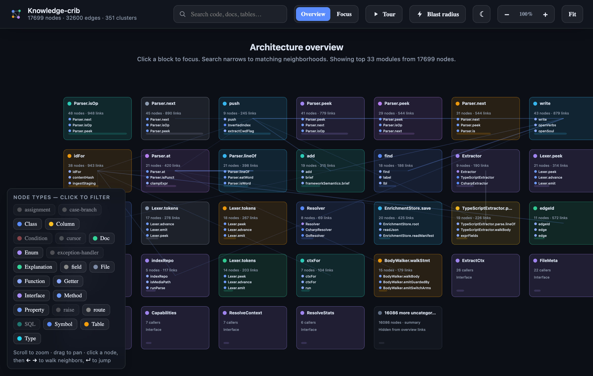
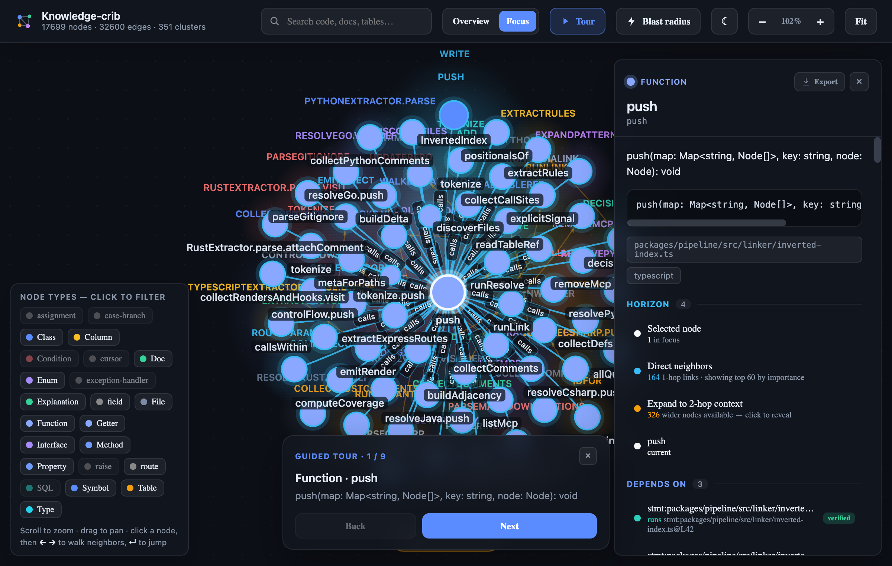

A portable "project soul" for AI coding agents. Index a codebase once into a
local knowledge graph, serve it to any agent over MCP — ~18.6× fewer tokens per task,
~45× fewer tokens across the whole graph. Every number below is measured, not projected —
reproduce with node scripts/crib-ab-task.mjs and node scripts/crib-bench.mjs.
TL;DR The headline, measured on this repo
One real cross-package task — "understand the query pipeline" —
answered two ways against Knowledge-crib's own source tree (18,050 nodes · 32,600 edges · 351 clusters).
Command: node scripts/crib-ab-task.mjs.
18.58×
fewer tokens per task
26,286 → 1,415
18.58×
cheaper — cache cleared
$0.079 → $0.004
79.6×
cheaper — warm session
6-turn task
$0.075
wasted per no-crib task
pure token burn
Why this is the honest floor: the "cache cleared" number prices every
token as fresh input — no prompt-cache discount either way. With the cache emptied the dollar gap
equals the token gap exactly, because you cannot be billed for tokens you never needed to read.
Caching only widens the gap (79.6× warm).
00 The product, live — the actual knowledge graph
Screenshots from the shipped offline viewer (crib viz) running
against Knowledge-crib's own indexed source: 18,050 nodes · 32,600 edges · 351 clusters.
This is the soul — the structured context the agent queries instead of re-reading files.

Architecture overview. The whole codebase as a navigable map — top modules
(Parser, Lexer, Extractor, EnrichmentStore, indexRepo…) with node/link counts and colour-coded
types. The agent's "where does this live" question is a lookup here, not a directory crawl.

Focus on one symbol — the entire benefit in one frame. The push()
function at centre with its 164 direct call edges; the side panel gives the signature, exact
source location (packages/pipeline/src/linker/inverted-index.ts), the 1-hop /
2-hop horizon, and verified dependencies pinned to file:line. This is
what crib returns for ~1 KB — versus an agent reading the whole file to reconstruct the same graph.
Two live agent sessions, same class of work, captured from the /usage
panel. The counter-intuitive result — more tokens, yet less money — is real, and explaining it
is the whole point.
Session A — with Knowledge-crib MCP 2%$0.56
Input179.6k
Output4.5k
Cache read3.5M
Cache write274.6k
Cache hit88%
Session B — without Knowledge-crib MCP 1%$1.12
Input128.3k
Output180
Cache read1.6M
Cache write219.3k
Cache hit82%
The explanation (and why we don't lean on it): on subscription plans,
re-read context rides the cache-read bucket, priced ~0.1× of fresh input. A crib-primed
session builds a large, byte-stable, highly cacheable context (88% hit) → most of its tokens are
cheap reads → lower bill despite more tokens. A crib-less session churns files as fresh input and
cache-writes (1.25×) → fewer tokens, higher bill. This subsidy is plan-specific. The
definitive, plan-independent proof is the cache-cleared measurement in the next section.
02 Primary dataset — real task, real bytes
Not modeled. The no-crib path greps the codebase and reads whole defining files
(an agent cannot read half a file); the crib path pinpoints the symbol and returns relationships
as graph edges. Byte counts are measured from actual tool output.
Bar width ∝ tokens pulled into the model's context to answer the same question.
03 Breadth dataset — six discovery queries
Command: node scripts/crib-bench.mjs (or pnpm bench). Each query
compares the crib default response against reading every whole file that contains a hit. Prices: input $3,
output $15, cache-write $3.75, cache-read $0.30 per 1M tokens (Sonnet-class list; overridable via env).
Query
Hits
Raw-read tokens
Crib tokens
vs raw
Crib $/task
No-crib $/task
SoulStore
10
26,656
727
36.67×
$0.0038
$0.600
indexRepo
10
10,888
710
15.34×
$0.0037
$0.245
Verbs
10
40,916
670
61.07×
$0.0035
$0.921
buildIndex
10
19,283
536
35.98×
$0.0028
$0.434
estimateTokens
6
36,097
325
111.07×
$0.0017
$0.812
cmdIndex
7
17,232
371
46.45×
$0.0019
$0.388
TOTAL (6 queries)
—
151,072
3,339
45.24×
$0.0175
$3.399
Across six queries: crib's default responses total 3,339 tokens vs
151,072 tokens of raw file reads — 45.24× leaner. Modeled over 6-turn sessions:
$0.0175 vs $3.40 (churn) — a 193.91× cost gap, 45.25× even if the no-crib reads were
perfectly cached. The same harness gates CI: node scripts/budget-check.mjs requires
≥3× cost saving (green), node scripts/crib-cache-stability.test.mjs holds (green).
04 The cost model — three lenses, no cherry-picking
The same task priced three ways so the number can't be gamed. Shared price module
(scripts/lib/pricing.mjs) feeds both the benchmark and the CI gate — they
can never disagree.
Lens
Assumption
crib
no-crib
Saving
Cold
cache cleared, every token fresh input
$0.0042
$0.079
18.58×
Warm — fair
both sides cached identically
$0.0074
$0.138
18.58×
Warm — realistic
no-crib working set churns (re-primed)
$0.0074
$0.591
79.6×
Bottom line: crib wins on every lens. The conservative floor is the
cold 18.6×; caching and multi-turn reuse only make it better. The paradox in §01 is the "warm
realistic" reality — but the product's promise rests on the cold floor, which no pricing plan can erase.
05 How it works
┌──────────────┐ index once ┌───────────────┐ serve over MCP ┌────────────────┐
│ Your repo │ ───────────────▶│ The "soul" │ ──────────────────▶│ Any AI agent │
│ (source) │ crib index │ .crib graph │ query · context · │ Claude · Cursor │
└──────────────┘ │ (local SQLite)│ neighbors · impact│ VS Code · custom│
▲ └───────────────┘ └────────────────┘
│ ▲ incremental re-index │
└──────────────────────────────────┴─────── as the code evolves ◀───────┘
The 19-verb surface (highest-value verbs)
Verb
Answers
Replaces
query
"Where is X?"
grep across the tree
context / dossier
"Explain X in depth"
reading the whole file + callers
neighbors
"What does X touch?"
reading every import
impact
"What breaks if I change X?"
manual blast-radius hunt
reconstruct
"Rebuild this package's shape"
reading the package end-to-end
extract_rules
"What business rules live here?"
tracing branches by hand
Lean by default, deep on demand. A default hit is a one-line snippet plus a
5-field pointer — ~1.3 KB. The full analysis+graph+evidence blob (~10.3 KB, 7.7× larger) is
one flag away (--with-llm). This tiering is what makes the crib pay for
itself instead of adding cost.
06 Guardrails — the economics are enforced in CI
"Lightweight" and "cheaper" are build-breaking facts, not opinions. Command:
pnpm budget:check. Any regression fails the build.
✓ Cost saving floor≥ 3× (measures ~45×)
✓ Default hit size≤ 1.5 KB/hit
✓ Warm query p50< 150 ms
✓ Cold index (50 files)< 20 s
✓ Packaged size< 5 MB
✓ Runtime deps≤ 6 external
✓ Core network calls= 0 (enforced)
✓ Response determinismbyte-identical (cache-safe)
07 Reproduce every number yourself
verify — from an indexed checkout
$node scripts/crib-ab-task.mjs# real task A/B — 18.6× cold, 79.6× warm$node scripts/crib-bench.mjs# six-query breadth — 45.2× leaner, 193.9× cheaper$node scripts/budget-check.mjs# build-breaking cost/latency/size gates$node scripts/crib-cache-stability.test.mjs# served context is byte-identical (cache-safe)$node scripts/crib-cost-report.mjs# reconcile real /usage $ from two live sessions
Full 4-bucket live capture: the host /usage panel isn't
machine-readable from inside a session, so cost:report ingests the numbers
from two real sessions (with vs without crib) and reconciles the dollar difference on both pricing
lenses — closing the loop between the modeled and the actually-billed cost.